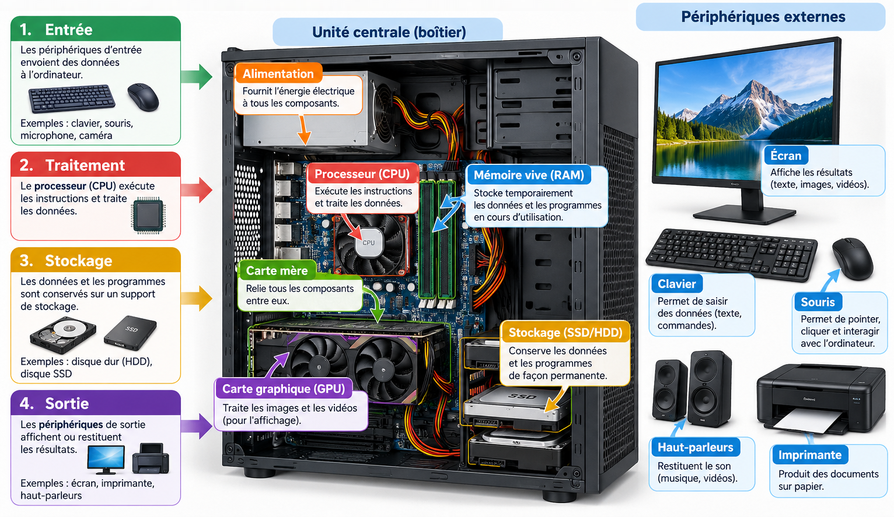
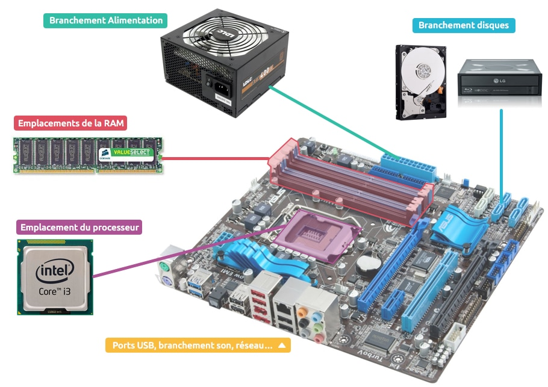
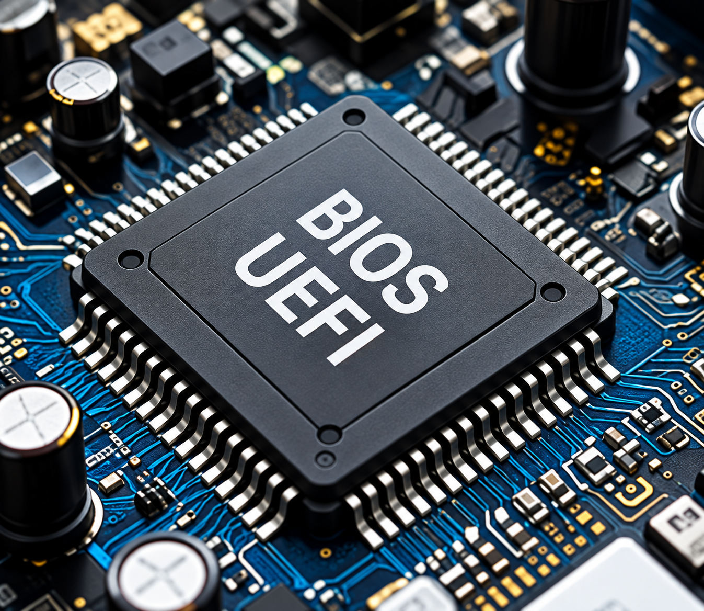
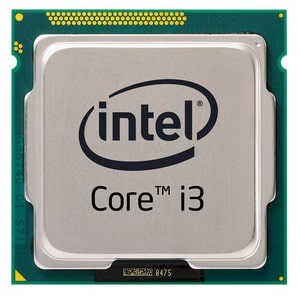
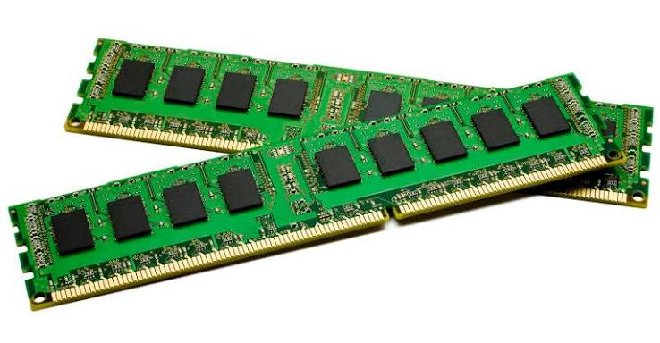
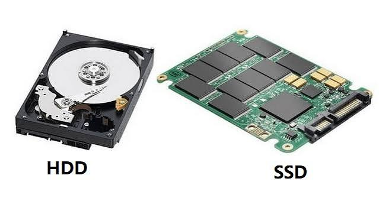
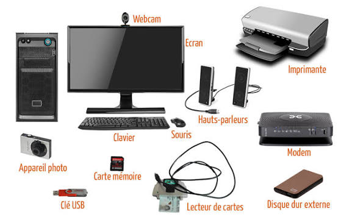

Composants matériels
Identifier les principaux composants matériels d’un ordinateur, comprendre leur rôle et analyser les critères essentiels permettant d’assurer leur compatibilité.

1. Carte mère
Définition
La carte mère est le circuit imprimé principal d’un ordinateur. Elle accueille ou relie les composants essentiels et fournit les voies de communication nécessaires à leurs échanges.
Elle comprend notamment le socket du processeur, les emplacements de mémoire, les connecteurs de stockage, les interfaces d’extension et différents connecteurs d’alimentation et de périphériques.

Éléments à repérer
| Élément | Rôle | Exemple |
|---|---|---|
| Socket | Emplacement destiné à recevoir le processeur. | Le CPU doit utiliser un socket compatible. |
| Emplacements RAM | Reçoivent les barrettes de mémoire vive. | Une carte mère peut proposer plusieurs emplacements. |
| Connecteurs de stockage | Relient les unités de stockage à la carte mère. | SATA ou M.2 selon le matériel. |
| Emplacements d’extension | Permettent d’ajouter des cartes spécialisées. | PCI Express pour une carte graphique ou réseau. |
| Connecteurs d’alimentation | Distribuent l’énergie nécessaire à la carte mère et au processeur. | Connecteurs provenant du bloc d’alimentation. |
La carte mère ne réalise donc pas seule le traitement : elle constitue surtout la plateforme d’interconnexion sur laquelle les composants sont installés et communiquent.
Exemple
Lorsqu’un SSD, de la mémoire RAM et une carte graphique sont installés dans un ordinateur, chacun utilise une interface prévue par la carte mère. Le choix de la carte mère détermine donc une partie importante des possibilités d’évolution de la machine.

2. Bus et communication entre les composants
Définition
Un bus désigne, dans un modèle architectural classique, un ensemble de voies de communication permettant de transporter des informations entre les différentes unités d’un ordinateur. Il contribue ainsi aux échanges entre le processeur, la mémoire et les autres composants du système.
Cette notion prolonge la communication entre composants étudiée dans la leçon précédente. Ici, l’objectif est de comprendre comment les échanges sont organisés au niveau matériel, sans entrer dans les détails électroniques.
| Type de bus | Rôle conceptuel | Exemple d’information transportée |
|---|---|---|
| Bus de données | Transporte les données échangées entre les unités. | Valeur lue depuis la mémoire ou résultat transmis à un composant. |
| Bus d’adresses | Indique l’emplacement ou la ressource concernée par une opération. | Adresse d’une zone mémoire à lire ou à modifier. |
| Bus de contrôle | Transporte les signaux nécessaires à la coordination des opérations. | Demande de lecture, d’écriture ou signal de synchronisation. |
Pourquoi les bus sont-ils importants ?
Les performances d’un ordinateur ne dépendent pas uniquement de la vitesse du processeur. Les composants doivent aussi pouvoir échanger les informations suffisamment rapidement. Une interconnexion peut donc devenir un facteur limitant lorsque le volume de données à transférer est important.
Il faut distinguer le modèle conceptuel des bus de données, d’adresses et de contrôle des interfaces concrètes rencontrées dans un ordinateur moderne. PCI Express, SATA ou certaines liaisons utilisées par les SSD répondent à des besoins d’interconnexion différents.
Exemple
Lorsqu’un processeur doit obtenir une information en mémoire, il faut identifier la ressource concernée, préciser l’opération à effectuer et transférer la donnée. Le modèle des bus de données, d’adresses et de contrôle permet de représenter simplement ces trois besoins.
PCI Express (PCIe) constitue un exemple moderne d’interconnexion utilisée notamment pour des cartes graphiques et d’autres périphériques rapides. Il ne faut toutefois pas le confondre avec le modèle historique d’un unique bus parallèle partagé : PCIe utilise des liaisons série point à point.
3. Processeur (CPU)
Définition
Le processeur, ou CPU (Central Processing Unit), est l’unité chargée d’exécuter les instructions des programmes et de réaliser des opérations arithmétiques, logiques et de contrôle.
Un processeur moderne possède généralement plusieurs cœurs capables de participer à l’exécution de plusieurs tâches. Sa fréquence, son architecture, le nombre de cœurs et la mémoire cache font partie des caractéristiques qui influencent ses performances, sans qu’un seul de ces paramètres suffise à les déterminer.

Fréquence
La fréquence représente le rythme de fonctionnement du processeur. Elle s’exprime en hertz (Hz), et couramment en gigahertz (GHz). 1 GHz correspond à un milliard de cycles d’horloge par seconde. Il ne faut toutefois pas assimiler directement un cycle à un calcul complet : les performances dépendent aussi de l’architecture du processeur, du programme exécuté, du nombre de cœurs et de la mémoire cache.
Cœurs et exécution des tâches
Un cœur est une unité de traitement capable d’exécuter des instructions. Les processeurs modernes comportent souvent plusieurs cœurs. Cela permet de mieux répartir certaines charges de travail lorsque le système et les logiciels peuvent exploiter le parallélisme.
Mémoire cache
La mémoire cache est une mémoire très rapide située dans ou très près du processeur. Elle conserve temporairement des données et instructions fréquemment utilisées afin de réduire le temps nécessaire pour y accéder.
Refroidissement
Le processeur produit de la chaleur pendant son fonctionnement. Un système de refroidissement, généralement composé d’un dissipateur thermique et d’un ventilateur ou d’une autre solution adaptée, contribue à maintenir une température de fonctionnement appropriée.
Exemple
Lorsqu’un tableur calcule une formule, les instructions nécessaires sont exécutées par le processeur à partir des données disponibles en mémoire.
4. Mémoire RAM
Définition
La RAM (Random Access Memory) est une mémoire de travail utilisée pour conserver temporairement les données et instructions dont les programmes en cours d’exécution ont besoin.
La RAM est généralement volatile : son contenu disparaît lorsque l’alimentation est coupée. Une capacité suffisante permet au système de maintenir davantage de données actives en mémoire et de limiter certains échanges avec le stockage, beaucoup plus lent.

Capacité et utilisation
La capacité de la RAM est exprimée en octets, généralement en gigaoctets (Go). Plus les applications utilisent simultanément de données, plus les besoins en mémoire peuvent augmenter. Lorsque la mémoire disponible devient insuffisante, le système peut devoir utiliser davantage le stockage comme espace de travail, ce qui est généralement plus lent.
Exemple
Lorsqu’un utilisateur ouvre simultanément un navigateur, un traitement de texte et plusieurs documents, une partie des données nécessaires à ces programmes est conservée en RAM afin d’être rapidement accessible.
5. Stockage : SSD et HDD
Définition
Le stockage conserve durablement le système d’exploitation, les applications et les fichiers. Deux technologies courantes sont le SSD (Solid-State Drive) et le HDD (Hard Disk Drive). Au-delà de la technologie de stockage, les performances et la compatibilité dépendent aussi de l’interface de communication utilisée pour relier le dispositif au système.

| Critère | SSD | HDD |
|---|---|---|
| Technologie | Mémoire électronique, sans pièce mécanique mobile | Plateaux magnétiques et mécanisme de lecture/écriture |
| Accès aux données | Très rapide | Plus lent |
| Bruit | Silencieux | Peut produire du bruit mécanique |
| Usage courant | Système, applications, données nécessitant un accès rapide | Stockage de grande capacité lorsque le coût par capacité est prioritaire |
Technologie, format et interface
Il est important de ne pas confondre la technologie de stockage avec son format physique ou son interface. Un SSD désigne une technologie sans plateaux mécaniques, tandis que M.2 désigne notamment un format de module. Selon le matériel, les unités de stockage peuvent utiliser différentes interfaces.
SATA est couramment utilisé pour des HDD et certains SSD. Les SSD au format M.2 peuvent, selon le modèle et la plateforme, utiliser différentes interfaces. Il faut donc consulter les spécifications du SSD et de la carte mère avant l’installation.
Exemple
Un ordinateur peut utiliser un SSD pour le système d’exploitation et les applications, et un HDD de grande capacité pour l’archivage de fichiers volumineux.
6. Cartes d’extension
Définition
Une carte d’extension ajoute ou améliore une fonction matérielle de l’ordinateur. Elle est installée dans une interface d’extension compatible de la carte mère.
Les cartes graphiques dédiées, certaines cartes réseau, cartes son ou cartes d’acquisition sont des exemples de cartes d’extension. Dans les ordinateurs modernes, PCI Express (PCIe) fournit une interconnexion rapide entre ces périphériques et le système. Les connecteurs PCIe peuvent avoir différentes tailles physiques et offrir un nombre différent de lignes de communication, ce qui doit être pris en compte lors de la vérification de compatibilité.
Quelques catégories
Une carte d’extension peut assurer une fonction graphique, réseau, audio, acquisition vidéo ou ajouter des interfaces supplémentaires. Avant son installation, il faut vérifier le type d’emplacement disponible, l’espace physique dans le boîtier et, pour certains composants, les besoins en alimentation.
Exemple
Une station destinée à la modélisation 3D peut recevoir une carte graphique dédiée afin de disposer de ressources graphiques adaptées aux applications utilisées.
7. Alimentation
Définition
Le bloc d’alimentation fournit aux composants de l’ordinateur l’énergie électrique nécessaire à leur fonctionnement. Il convertit l’électricité provenant du secteur en tensions adaptées aux circuits internes.
Son choix doit prendre en compte la puissance nécessaire au système, les connecteurs requis par les composants, le format physique et la qualité de l’alimentation.
Puissance et connecteurs
La puissance d’une alimentation est exprimée en watts (W). Elle doit être suffisante pour l’ensemble de la configuration, mais ce critère ne suffit pas à lui seul. Il faut également vérifier les connecteurs nécessaires, le format du bloc d’alimentation et les exigences des composants installés.
Le processeur, la carte mère, les unités de stockage et certaines cartes graphiques n’utilisent pas nécessairement les mêmes connecteurs d’alimentation. La vérification doit donc être réalisée à partir des spécifications des composants.
Exemple
L’ajout d’une carte graphique plus exigeante peut nécessiter une alimentation disposant d’une puissance et de connecteurs adaptés. Une puissance nominale élevée ne suffit donc pas à garantir à elle seule la compatibilité.
8. Périphériques d’entrée et de sortie
Définition
Un périphérique est un équipement permettant au système informatique d’échanger des informations avec l’utilisateur ou son environnement. Un périphérique d’entrée fournit des données au système; un périphérique de sortie restitue des informations produites par le système.

| Catégorie | Fonction | Exemples |
|---|---|---|
| Entrée | Envoyer des données vers le système | Clavier, souris, microphone, scanner |
| Sortie | Restituer des informations | Écran, haut-parleurs, imprimante |
| Entrée / sortie | Échanger dans les deux directions | Écran tactile, interface réseau |
Périphériques bidirectionnels
Certains périphériques ne sont pas exclusivement des entrées ou des sorties. Une interface réseau, par exemple, reçoit et transmet des données. Un écran tactile affiche des informations tout en recevant les actions tactiles de l’utilisateur.
Exemple
Lors d’une visioconférence, le microphone et la caméra fournissent des données au système, tandis que l’écran et les haut-parleurs restituent les informations reçues.
9. Connecteurs et ports
Définition
Un connecteur fournit une interface physique permettant de relier des composants ou des périphériques. Le terme port désigne couramment le point de connexion accessible permettant cet échange.
USB, HDMI, DisplayPort, Ethernet et les connecteurs audio répondent à des usages différents. La forme d’un connecteur ne suffit pas toujours à déterminer toutes les fonctions ou performances disponibles : celles-ci dépendent aussi de la norme et de la configuration du matériel.
Interface physique et norme
Deux connecteurs qui se ressemblent ne garantissent pas nécessairement les mêmes fonctions ou performances. Lors d’une installation, il faut distinguer la forme physique du connecteur, la norme de communication utilisée et les fonctions réellement prises en charge par l’équipement.
| Connexion | Usage courant |
|---|---|
| USB | Périphériques et échanges de données; certaines variantes peuvent aussi fournir de l’alimentation. |
| HDMI / DisplayPort | Connexion d’un écran et transport de signaux audiovisuels selon l’équipement. |
| Ethernet | Connexion à un réseau filaire. |
| Audio | Connexion de périphériques sonores selon les interfaces disponibles. |
Exemple
Un écran peut être connecté à un ordinateur par HDMI ou DisplayPort. Le choix dépend des interfaces disponibles sur les deux appareils et des caractéristiques nécessaires à l’affichage.
10. Compatibilité entre les composants
Définition
La compatibilité matérielle signifie que plusieurs composants peuvent être installés et fonctionner ensemble en respectant leurs contraintes mécaniques, électriques et techniques.
Avant une installation ou une mise à niveau, il faut notamment vérifier le socket du processeur, le type de mémoire pris en charge, les interfaces et interconnexions disponibles, les dimensions physiques, les connecteurs d’alimentation et les capacités du système. Pour une carte d’extension ou un dispositif de stockage, il faut donc vérifier non seulement qu’un connecteur existe, mais aussi que l’interface utilisée est compatible avec le composant choisi.
Compatibilité matérielle et logicielle
La compatibilité doit être vérifiée à plusieurs niveaux. Un composant peut avoir besoin d’un emplacement physique adapté, d’une alimentation suffisante et d’une interface compatible. Il peut également nécessiter une prise en charge par le système d’exploitation.
Un pilote de périphérique (driver) est un logiciel permettant au système d’exploitation de communiquer correctement avec un matériel. Une imprimante, une carte graphique, une carte réseau ou un périphérique audio peut nécessiter un pilote approprié.
Exemple
Une barrette de mémoire ne doit pas être choisie uniquement selon sa capacité. Il faut également vérifier que sa génération et ses caractéristiques sont prises en charge par la carte mère et le processeur concernés.
Exemple guidé : ouverture d’une application
Cette situation permet de relier plusieurs composants étudiés dans la leçon :
- L’utilisateur déclenche l’ouverture de l’application à l’aide d’un périphérique d’entrée.
- Le système localise les fichiers nécessaires sur le SSD ou le HDD.
- Les données utiles à l’exécution sont chargées dans la RAM.
- Le CPU exécute les instructions du programme.
- Les composants communiquent à travers les interconnexions fournies par la plateforme matérielle.
- Le système graphique prépare les informations destinées à l’affichage.
- L’écran restitue le résultat à l’utilisateur.
Activité de synthèse
Vous devez préparer un poste destiné à la bureautique, à la visioconférence et au stockage de documents. Proposez une configuration matérielle cohérente sans imposer de marque particulière.
- Identifiez les composants indispensables.
- Expliquez le rôle de chaque composant proposé.
- Précisez quels périphériques d’entrée et de sortie sont nécessaires.
- Indiquez les connecteurs, interfaces et interconnexions importants.
- Expliquez brièvement comment les composants concernés échangent des informations.
- Présentez au moins quatre vérifications de compatibilité à effectuer avant l’assemblage ou la mise à niveau.
À retenir
Quiz — Composants matériels
Répondez aux questions, puis cliquez sur Soumettre mes réponses. La correction et votre résultat seront affichés automatiquement.
Mises en situation — Analyse d’une configuration
Pour les situations suivantes, il ne suffit pas de nommer un composant. Analysez les symptômes, identifiez les ressources susceptibles de limiter le système et justifiez votre réponse. Certaines situations peuvent avoir plusieurs facteurs limitants.
Scénario 1 — Jeu vidéo sur une configuration très limitée
Un utilisateur possède un ordinateur avec 1 Go de RAM, un processeur à un seul cœur et un stockage HDD. Il lance un jeu vidéo récent qui demande beaucoup de ressources.
- Que risque-t-il d’observer pendant le lancement et l’utilisation du jeu ?
- Pourquoi la faible quantité de RAM peut-elle ralentir fortement le système ?
- Quel effet le processeur à un seul cœur peut-il avoir sur l’exécution de tâches exigeantes ?
- Le remplacement du HDD par un SSD résoudrait-il à lui seul tous les problèmes ? Justifiez.
- Quelles informations supplémentaires faudrait-il connaître avant de proposer une mise à niveau complète ?
Scénario 2 — Plusieurs applications ouvertes simultanément
Un étudiant travaille avec un navigateur contenant de nombreux onglets, un logiciel de visioconférence et un traitement de texte. L’ordinateur devient progressivement très lent alors que plusieurs programmes restent ouverts.
- Quel composant de la leçon examineriez-vous en priorité et pourquoi ?
- Que peut faire le système lorsque la mémoire de travail disponible devient insuffisante ?
- Pourquoi un stockage plus lent peut-il rendre la situation encore plus perceptible ?
- Quelle amélioration matérielle pourrait être pertinente ? Quelle vérification de compatibilité faut-il effectuer avant l’achat ?
Scénario 3 — Nouvelle carte graphique
Une utilisatrice achète une carte graphique performante. L’ordinateur possède un emplacement PCIe, mais la carte est longue et demande une alimentation supplémentaire.
- Le fait de disposer d’un emplacement PCIe suffit-il pour conclure que la carte est compatible ?
- Quelles contraintes physiques faut-il vérifier ?
- Quelles caractéristiques du bloc d’alimentation faut-il vérifier ?
- Quel élément logiciel peut également être nécessaire pour que le système d’exploitation exploite correctement la carte ?
Scénario 4 — Mise à niveau de la mémoire
Un ordinateur possède 4 Go de RAM. L’utilisateur souhaite acheter une barrette de 16 Go simplement parce que sa capacité est plus élevée.
- Pourquoi la capacité ne suffit-elle pas pour choisir la nouvelle barrette ?
- Quelles informations de la carte mère et du processeur faut-il consulter ?
- Que peut-il se passer si la génération ou les caractéristiques de la mémoire ne sont pas prises en charge ?
- Proposez une méthode de vérification avant l’achat.
Scénario 5 — Ordinateur lent au démarrage et espace presque saturé
Un poste utilise un HDD ancien et dispose de très peu d’espace libre. L’utilisateur souhaite améliorer la réactivité générale et conserver plusieurs téraoctets d’archives.
- Quel type de stockage pourrait être privilégié pour le système d’exploitation et les applications ?
- Quel rôle pourrait conserver le HDD ?
- Pourquoi faut-il vérifier l’interface de stockage disponible sur la carte mère avant l’achat ?
- Proposez une organisation cohérente du stockage et justifiez-la.